Fan Cowling, B207
Fan cowling, B207To remove
1. Remove the upper engine cover.
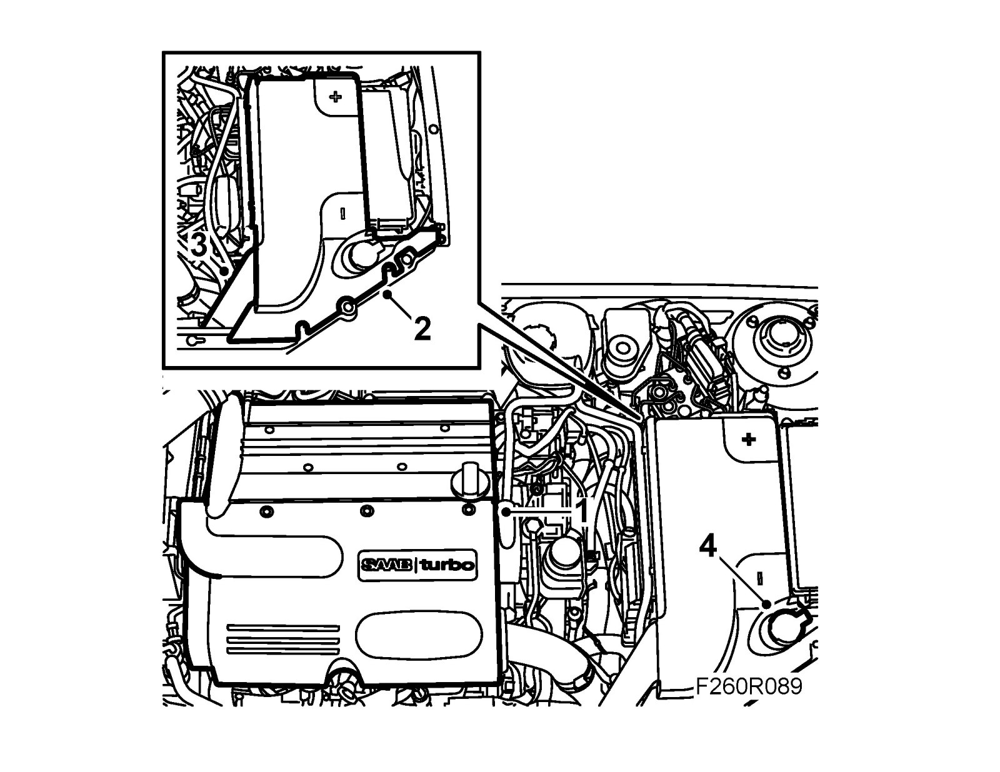
2. Remove the battery cover and release the cables from the battery.
3. Remove the battery cooling pipe by releasing it from the catch.
4. Remove the washer fluid filler pipe.
5. Remove the upper radiator member.
6. Detach the charge air hose from the throttle body and undo the upper charge air pipe bracket from the fan cowling.
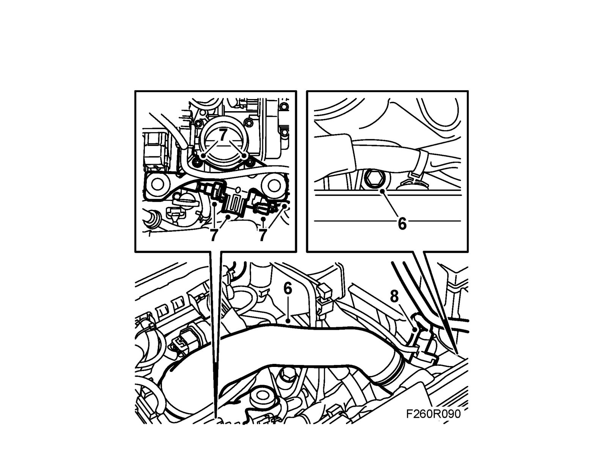
7. Remove the bracket from the throttle body, disconnect the quick-release couplings and connectors from the EVAP canister purge valve and bend aside the bracket.
8. Unplug the connector and detach the hose from the pressure/temperature sensor on the charge air pipe.
9. Raise the car.
10. Remove the front spoiler shield. Detach the hose to the headlamp washer and unplug and remove the connector. See spoiler shield, to remove.
11. Disconnect the charge air hose from the charge air pipe.
12. Remove the lower charge air pipe mounting from the fan cowling.
13. Lower the car.
14. Remove the charge air pipe with hose.
15. Remove the battery.
16. Remove the cover from the battery box.
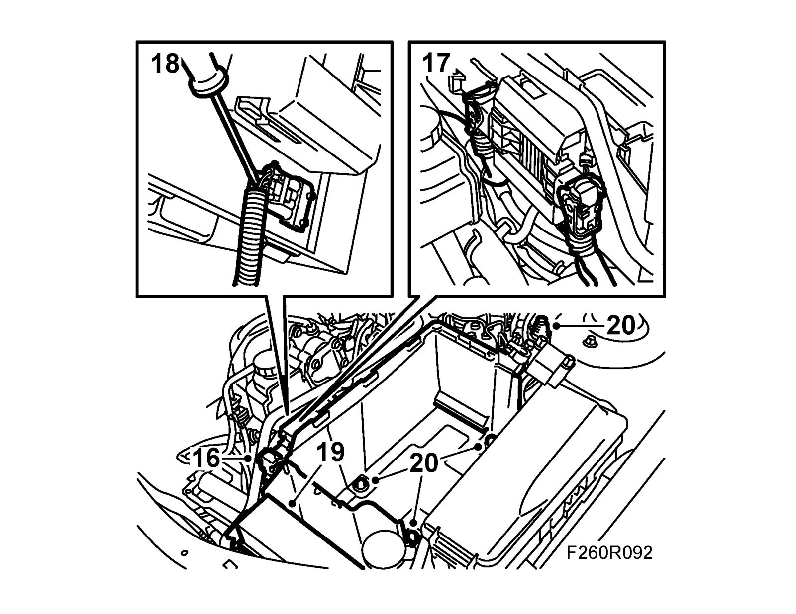
17. On cars with automatic transmission: Unplug the connectors from the transmission control module.
18. Lift the cover and detach the connector.
19. Press in the catch and remove the electrical centre from the battery box.
20. Unplug the bonnet switch connector and remove the battery box.
21. Undo the clip holding the cables from the battery tray.
22. Detach the connector and the clip securing the cable from the fan cowling.
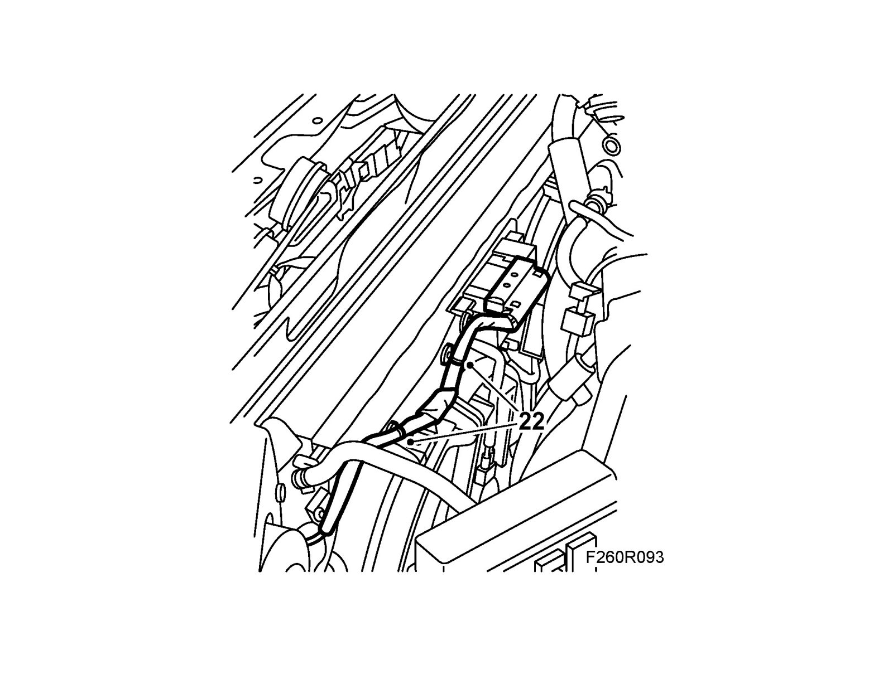
23. Remove the upper radiator cover and undo the upper radiator mounting from the body.
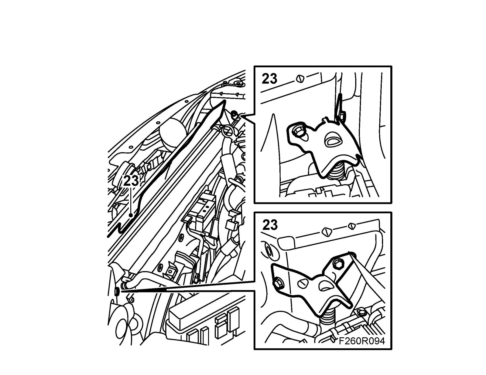
24. Undo and bend aside the lower radiator cover.
25. Fit 83 95 212 Strap between the radiator and the radiator fan, move the radiator forward and secure it with the strap.
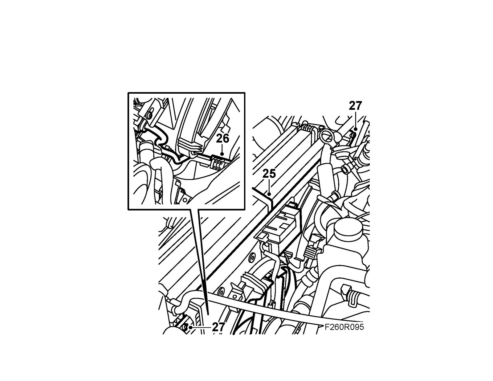
26. On cars with automatic transmission: Remove the protector over the upper quick-release coupling, undo the oil pipe quick-release coupling using 87 92 806 Removal tool and detach the upper oil pipe from the radiator. Plug the pipe and the quick-release couplings. Collect any oil spill. Undo the plastic clip holding both the oil pipes if necessary.
27. Undo the fan cowling retaining bolts and remove the cowling.
To fit
1. Fit the fan cowling to the radiator with screws.
Important
Make sure the lower catches of the fan cowling go into their mountings. Otherwise, there is a risk that the cooling system could be damaged.
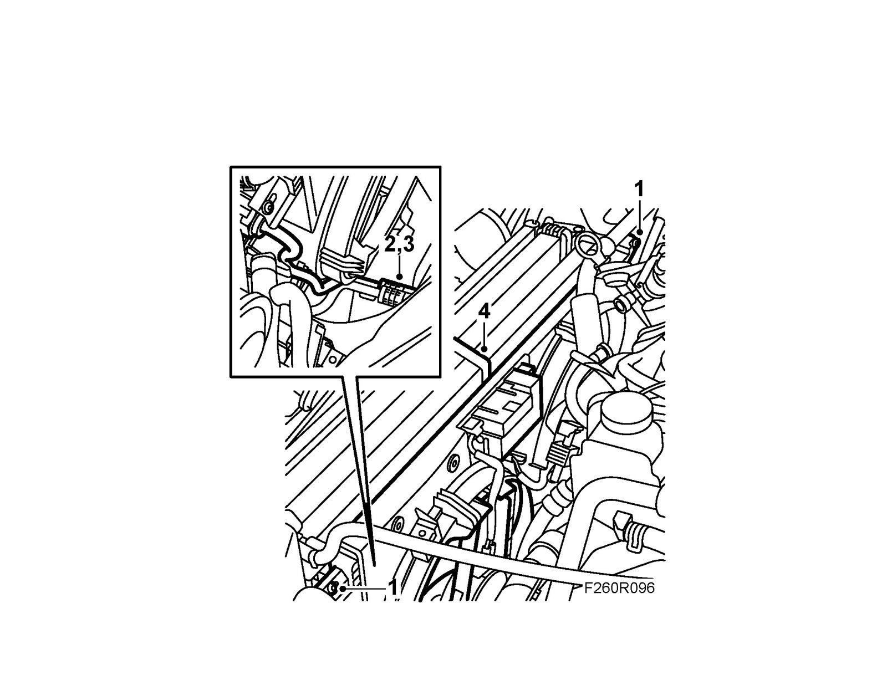
2. On cars with automatic transmission: Remove the plugs, fit the pipe to its mounting on the radiator and connect the oil pipe to the quick-release coupling. Check that the pipe is connected properly to the quick-release coupling.
3. On cars with automatic transmission: Move the protection over the quick release coupling and secure the pipe to the lower plastic clip. Wipe away any oil spill.
4. Remove the strap.
5. Fit the lower radiator cover.
6. Fit the upper radiator brackets to the body.
7. Fit the upper radiator cover.
8. Bend back the bracket, connect the quick-release couplings and the connector to the EVAP canister purge valve, and fit the bracket to the throttle body.
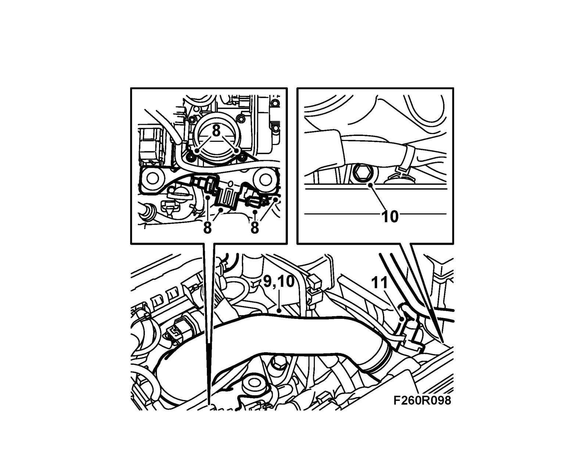
9. Lower the charge air pipe with hose.
10. Fit the charge air hose to the throttle body and the upper charge air pipe to the fan cowling, do not tighten the bolt in the fan cowling.
11. Plug in the connector and attach the hose to the pressure/temperature sensor on the charge air pipe.
12. Plug in the connector to the radiator fans and secure the cables to the fan cowling with cable ties.
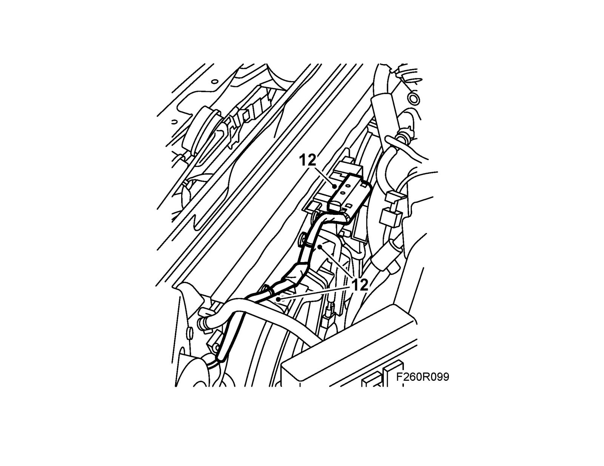
13. Raise the car.
14. Fit the lower charge air pipe to the fan cowling.
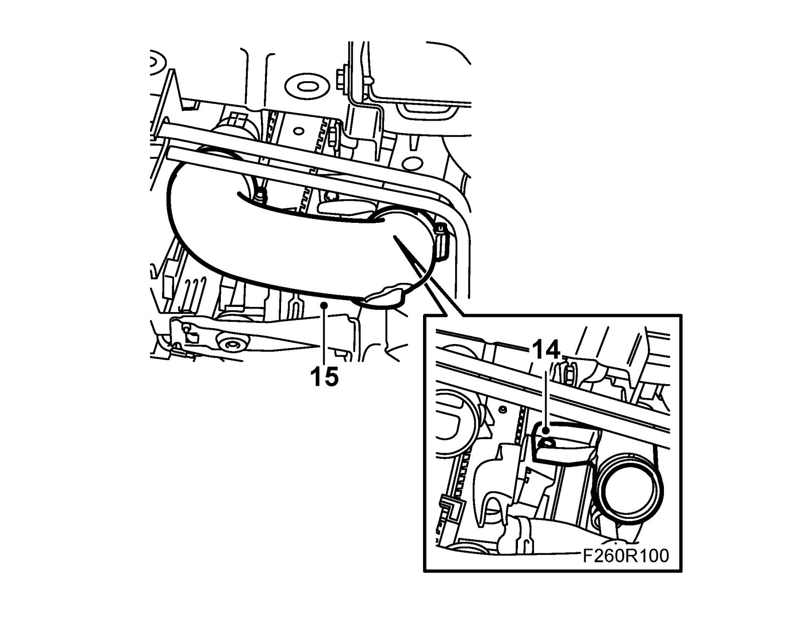
15. Fit the hose from the charge air cooler to the charge air pipe.
16. Fit the front spoiler shield and secure the hose to the headlamp washer. Fit and plug in the connector. See spoiler shield, to fit.
17. Lower the car.
18. Tighten the bolt for the charge air pipe in the fan cowling.
19. Fit the cable attachment to the battery box.
20. Fit the battery box.
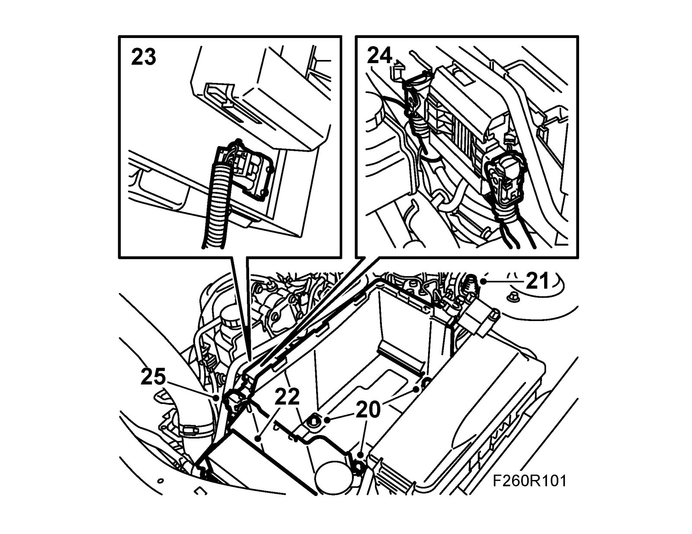
21. Plug in the bonnet switch connector.
22. Fit the electrical centre in the battery box.
23. Secure the connector to the cowling.
24. On cars with automatic transmission: Plug in the connectors to the transmission control module.
25. Fit the cover on the battery box.
26. Fit the battery, connect battery cables.
27. Fit the upper radiator member.
28. Fit the washer fluid filler pipe.
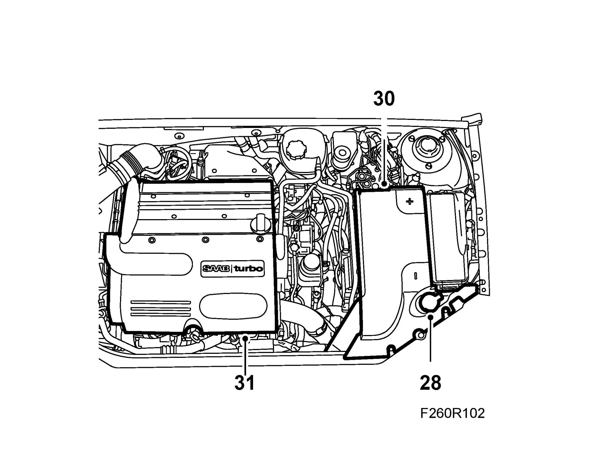
29. Fit the battery cooling pipe.
30. Fit the battery cover.
31. Fit the upper engine cover.
32. If the battery has been disconnected, see: Procedure after reconnecting the battery.